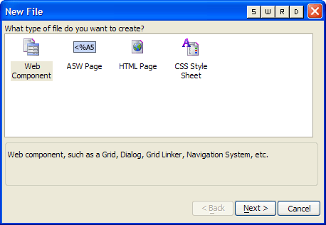
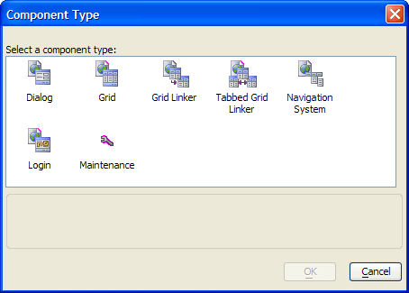

Creating a New Web Component
A web component is code module (somewhat similar to an ActiveX control) that you place on a web page. A grid web component "knows" how to read from and write to a database, and display the data on an HTML page. There are seven types of web components, which you embed in .A5W pages to give them the ability to interact with your web application.
Creating a Component
Select the project in the Web Projects list to which you wish to add the component.
Click
 to display the New File dialog.
to display the New File dialog.

Select Web Component and click OK.
In the resulting Component Type dialog, choose any of the following and click OK.

Supported By
Alpha Five Version 6 and Above
Limitations
Web publishing applications only.